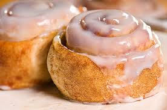

Cinnamon Rolls

Description
Satisfy your sweet tooth with our melt-in-your mouth cinnamon rolls. Served with icing.
Ingredients
- Dough
- 1/4 -ounce package yeast
- 1/2 cup warm water
- 1/2 cup scalded milk
- 1/4 cup sugar
- 1/3 cup butter or shortening
- 1 teaspoon salt
- 1 egg
- 3 1/2 to 4 cups all-purpose flour
- Glaze
- 4 tablespoons butter
- 2 cups powdered sugar
- 1 teaspoon vanilla extract
- 3 to 6 tablespoons hot water
Directions
- Dough
- Heat oven to 350 degrees F.
- In a small bowl, dissolve yeast in warm water and set aside.
- In a large bowl mix milk, sugar, melted butter, salt and egg
- Add 2 cups of flour and mix until smooth. Add yeast mixture. Mix in remaining flour until dough is easy to handle.
- Knead dough on lightly floured surface for 5 to 10 minutes. Place in well-greased bowl, cover and let rise until doubled in size, usually 1 to 1 1/2 hours.
- When doubled in size, punch down dough. Roll out on a floured surface into a 15 by 9-inch rectangle.
- Spread melted butter all over dough. Mix sugar and cinnamon and sprinkle over buttered dough.
- Beginning at the 15-inch side, role up dough and pinch edge together to seal. Cut into 12 to 15 slices.
- Coat the bottom of baking pan with butter and sprinkle with sugar. Place cinnamon roll slices close together in the pan and let rise until dough is doubled, about 45 minutes. Bake for about 30 minutes or until nicely browned.
- Glaze
- Meanwhile, mix butter, powdered sugar, and vanilla. Add hot water 1 tablespoon at a time until the glaze reaches desired consistency.
- Spread over slightly cooled rolls.
- Enjoy!